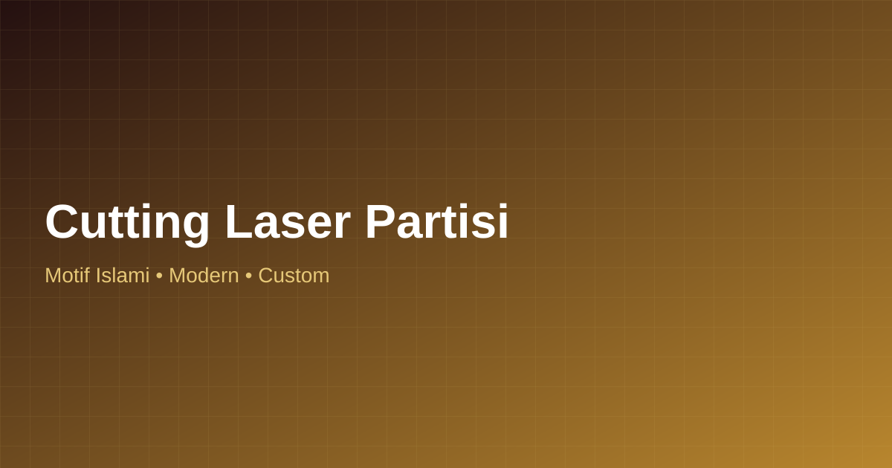

Raja Cutting Laser membantu mewujudkan partisi ruangan dengan motif islami maupun modern berbahan kayu, ACP, atau besi, cocok untuk masjid, musala, kantor, hingga hunian pribadi.
💬 WhatsApp Raja Cutting Laser
Partisi dengan motif cutting laser dapat menjadi elemen pembatas ruangan yang sekaligus mempercantik interior. Material yang sering digunakan antara lain kayu (MDF/multipleks), ACP, maupun plat besi, dengan motif mulai dari geometris islami hingga pola modern minimalis.
Raja Cutting Laser melayani pembuatan panel partisi motif untuk kebutuhan masjid, musala, kantor, ruang tamu, hingga area komersial lainnya di wilayah Jabodetabek.
Partisi motif islami untuk pembatas ruang sholat atau area wudhu.
Motif geometris modern untuk membatasi area kerja secara estetik.
Tersedia opsi kayu, ACP, atau besi sesuai kebutuhan dan budget.
Panel partisi dibuat sesuai dimensi ruangan Anda.
Proses pemesanan yang mudah dan transparan dari konsultasi hingga pengiriman.
Hubungi tim Raja Cutting Laser via WhatsApp, ceritakan kebutuhan ornamen, partisi, atau plafon Anda.
Kami bantu siapkan desain motif sesuai konsep masjid, rumah, atau bangunan komersial Anda.
Pengerjaan menggunakan mesin CNC router dan galvo laser untuk hasil ornamen presisi dan detail.
Hasil difinishing rapi, dikemas aman, dan dikirim ke lokasi proyek Anda di area Jabodetabek.
Beberapa pertanyaan yang sering ditanyakan calon pelanggan Raja Cutting Laser terkait cutting laser partisi.
Untuk partisi masjid atau musala, material kayu atau ACP dengan motif islami sering menjadi pilihan karena memberikan kesan elegan dan sesuai konsep bangunan ibadah.
Bisa. Tim Raja Cutting Laser dapat membantu mengombinasikan elemen motif islami dengan sentuhan desain modern sesuai kebutuhan Anda.
Lama pengerjaan tergantung pada ukuran, jumlah panel, dan kerumitan motif. Silakan konsultasikan kebutuhan Anda untuk estimasi waktu yang lebih akurat.
Jelajahi layanan lain dari Raja Cutting Laser yang mungkin Anda butuhkan.
Sampaikan ukuran ruangan dan motif partisi yang diinginkan kepada tim Raja Cutting Laser.
💬 WhatsApp Raja Cutting Laser